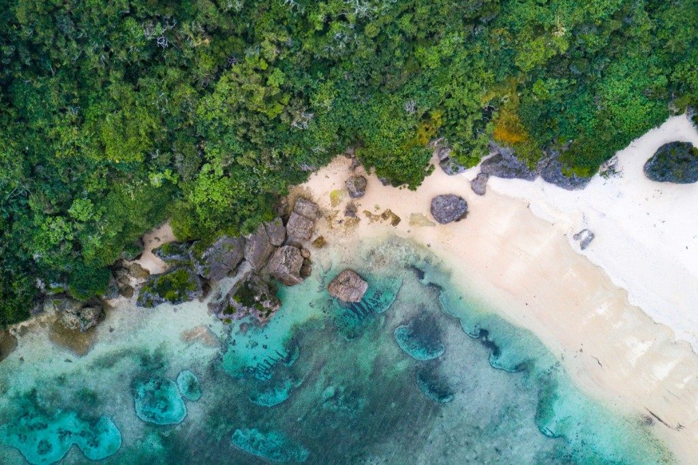
You want your favourite people gathered in one place, somewhere beautiful, somewhere that feels nothing like home. Not a beach ceremony. Not a ballroom. A garden. Green, lush, open sky. The kind of place where your proposal on that rainy hillside in St Kilda would feel right at home.
You want everyone relaxed. Parents who have never left Australia feeling comfortable and looked after. Sisters and mates making a holiday out of it. Good food on the table, proper food, the kind you both seek out. Drinks flowing. And when the night gets going, you want dancing. Not a polite shuffle. Real dancing, the kind that makes the best weddings the best weddings.
Eleven years together, since you were sixteen and seventeen. A proposal that was a decade in the making. This is the celebration that matches the weight of that. Not over the top. Not stiff. Just everyone you love, in a setting that stops them in their tracks, having the best time of their lives. That is what we are building for you.
Your guests arrive in Okinawa. For most of them, this is their first time in Japan. Some have never left Australia. The warm subtropical air hits them at the airport and everything already feels different.
We arrange airport transfers and get everyone settled at their accommodation. In the evening, you host a casual welcome dinner. Nothing formal. A long table at a local restaurant, cold Orion beers, platters of Okinawan food, your family meeting Hayden's family properly for the first time in this setting. It sets the tone for everything that follows: relaxed, social, no agenda.
You and Hayden can use this evening to hand out a simple guest guide we prepare in advance. Where to eat, what to see, how to get around. Your parents will appreciate it.
The morning starts quietly. Just the two of you over breakfast, reading your private vows to each other before anyone else is awake. This is your moment. No audience, no nerves.
In the early afternoon, you get ready. Georgia, your hair and makeup artist arrives at your room. Hayden, you get dressed somewhere nearby, close enough to feel the energy building. Mid-afternoon, your guests gather in a garden setting. Green all around. You walk down the aisle. Short vows, exactly how you want them. You are married.
The ceremony flows into cocktails, then dinner. A seated meal with food worth remembering. Wine, champagne, Okinawan awamori if your mates are brave. As the evening deepens, the music picks up. And you dance. Everyone dances. This is the part you have been looking forward to.
Each of these venues can deliver your garden ceremony, a seated reception with premium dining, and the capacity for 30 to 50 guests. They are located across different parts of Okinawa, and we have shortlisted them for your June scouting trip.
The newest wedding venue on the island, opened in 2023. Kiranah sits on a forested hilltop surrounded by golf course and untouched greenery. No beach in sight. The ceremony takes place in a wood-and-glass chapel wrapped in forest, with reception halls that open onto ocean-view terraces. A live sanshin performance is standard. The standout: a terrace grill where the chef cooks in front of your guests. State-of-the-art sound and AV equipment in both reception halls.
Food is outstanding. Rated 4.85 out of 5 by real couples. The venue is operated by Novarese, one of Japan's most respected wedding companies. They have an English website and are comfortable with international couples. The hilltop isolation means noise restrictions are likely minimal, which is good for dancing.
Estimated cost (40 guests): AUD $30,000 to $40,000 including ceremony, reception, catering, and standard inclusions. At the upper edge of your budget with premium food upgrades.
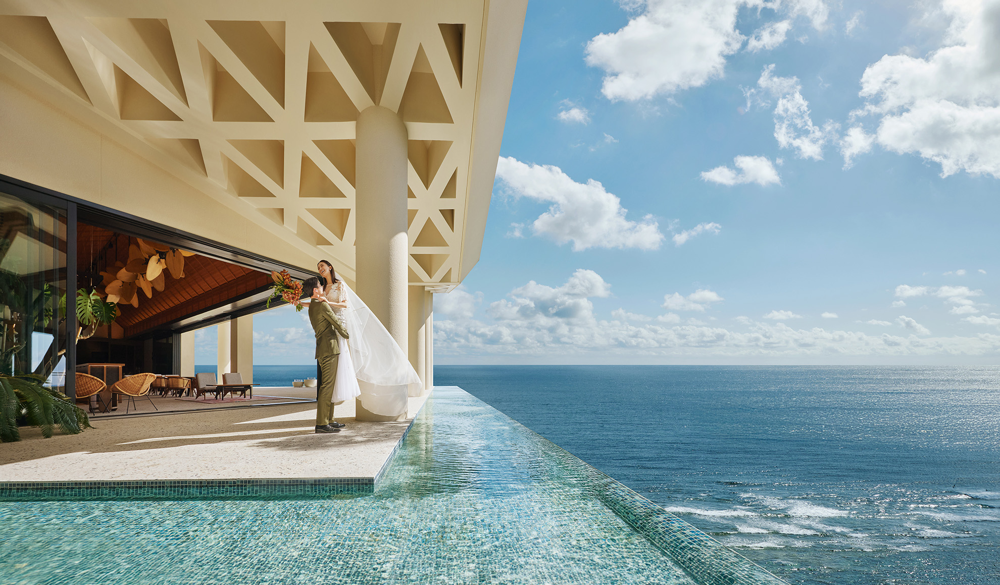
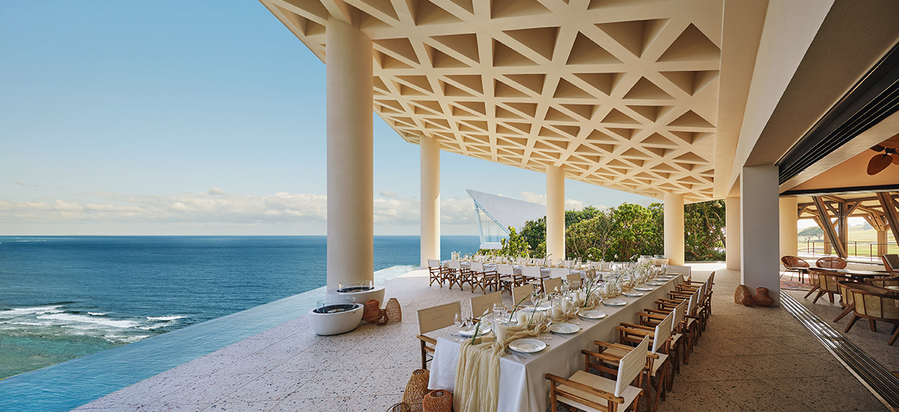
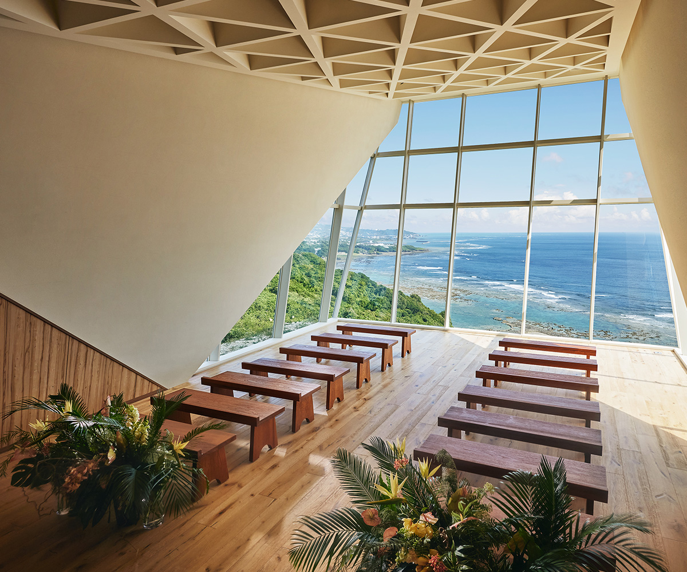
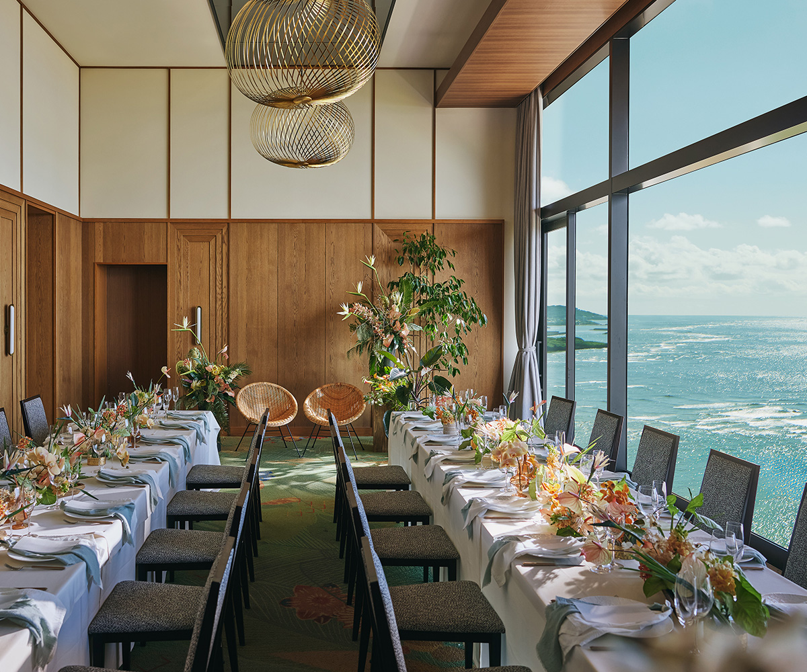
A heritage resort built in 1975, designated as one of Japan's Modern Movement architectural landmarks. The vibe here is old Hawaii, exactly the feeling Georgia described from her aunt and uncle's wedding. Over 350 mature palm trees. Sprawling tropical gardens. A retro-charm that newer resorts simply cannot replicate.
The ceremony option that stands out: the Banyan Tree Garden Wedding. You exchange vows beneath a sacred banyan tree, a living canopy of trailing aerial roots surrounded by lush tropical gardens. There is also the Mahina Garden option, a higher-elevation garden ceremony with greenery all around and ocean as a distant backdrop. Five dedicated reception spaces including indoor-outdoor garden party areas and terrace dining. Charcoal-grilled options available for the food-focused.
Capacity for the garden ceremony may need confirmation for 50 guests. We will verify this directly. The resort setting means guests can stay on-site.
Estimated cost (40 guests): AUD $20,000 to $35,000. The most flexible pricing of the four options. Operated by Festina Wedding (a subsidiary of Watabe Wedding, Japan's largest resort wedding company).
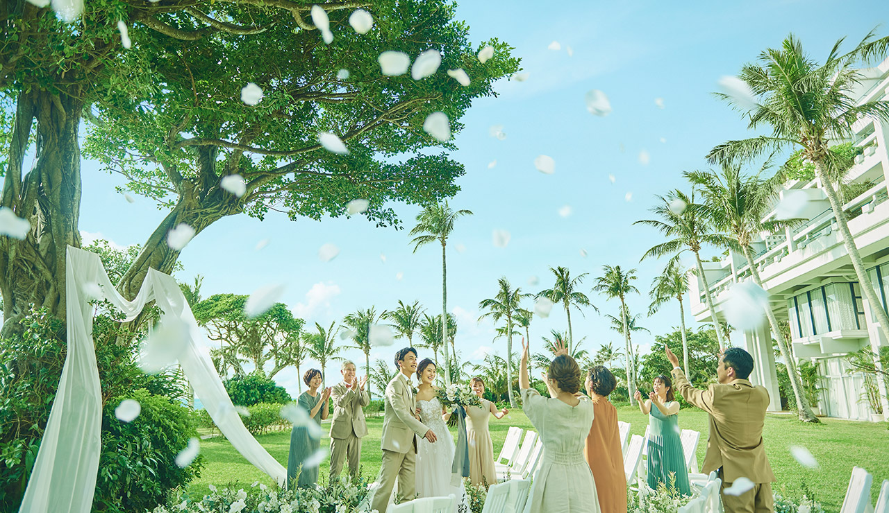
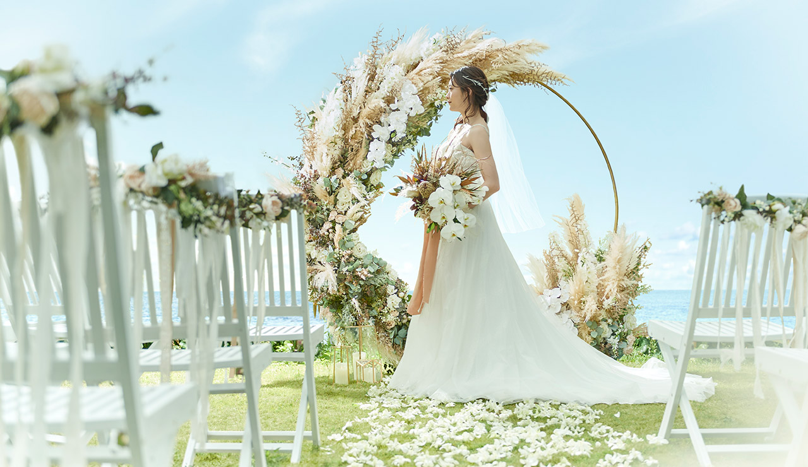
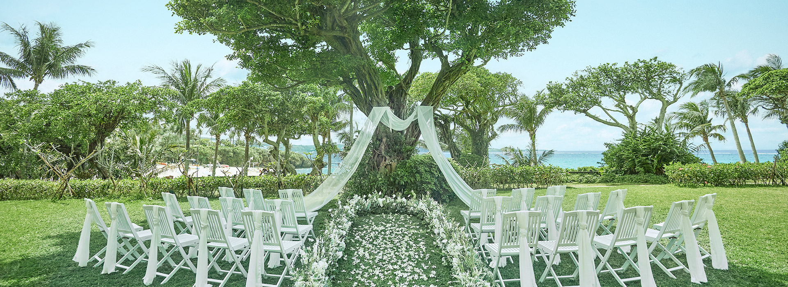
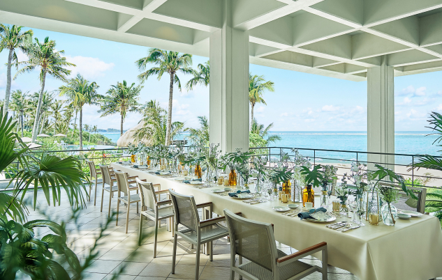
This is a different kind of option. South Gate Hotel opens in May 2026, making it the newest wedding venue in Okinawa. It is operated by Plan Do See, one of Japan's most respected hospitality groups. They run The Sodoh Higashiyama in Kyoto and The Aoyama Grand Hotel in Tokyo. The food pedigree is real: the sister restaurant holds a Michelin star, and every venue has a private open kitchen so your guests watch the chefs work as the courses arrive.
The setting is urban rather than resort. Ocean-view chapel and reception on the hotel's top floor, looking out over the Naha waterfront. Three reception venues available, with the entire floor reserved exclusively for your wedding. Ceremony options include chapel, garden, and shrine styles. Attire is through The Treat Dressing, which carries brands from New York, Paris, Milan, and London. Everything from the ceremony to the after-party can happen within the hotel.
The biggest advantage here: accessibility. Eleven minutes from the airport. Walking distance to Naha's restaurants, shops, and nightlife. For your parents and guests who have never left Australia, this is by far the easiest venue to navigate. No 75-minute resort drive. No remote peninsula. They land, they are there.
We want to be upfront: this is not the lush tropical garden setting of the other three venues. It is a stylish city hotel with ocean views. The "garden ceremony" option needs to be confirmed by Juri to understand exactly what that space looks like. If the garden vibe is your priority, the other three venues deliver it more naturally. But if you value great food, easy logistics for your guests, and the strongest price point on this list, South Gate deserves a look.
Estimated cost (40 guests): approximately ¥1,129,000 (AUD $10,300) on the small group plan. At 50 guests: ¥1,271,820 (AUD $11,600). This is the most affordable venue on this list by a significant margin, leaving substantial room for premium add-ons, a DJ, upgraded florals, and our planning fee, all within your AUD $30,000 floor.
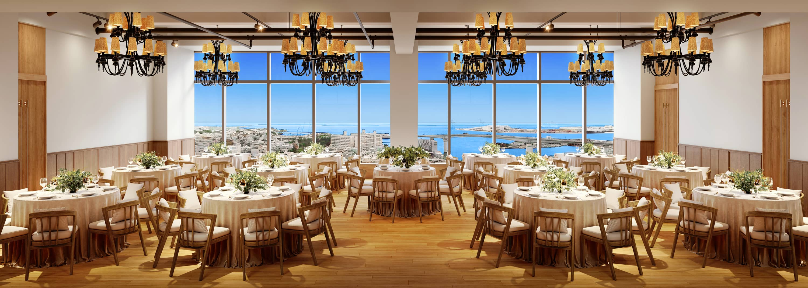
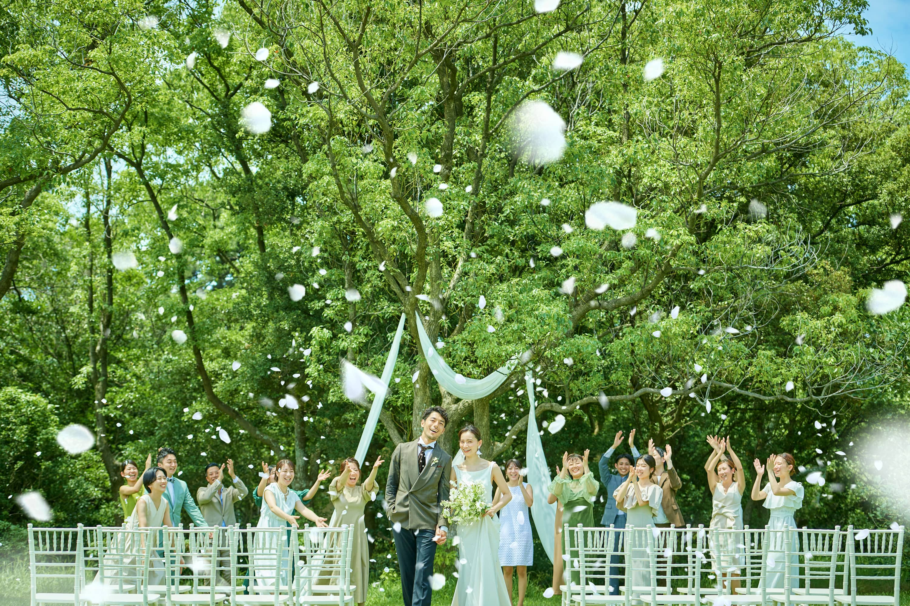
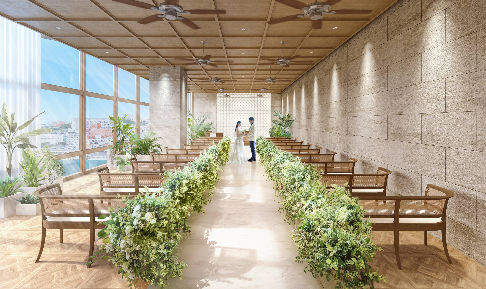
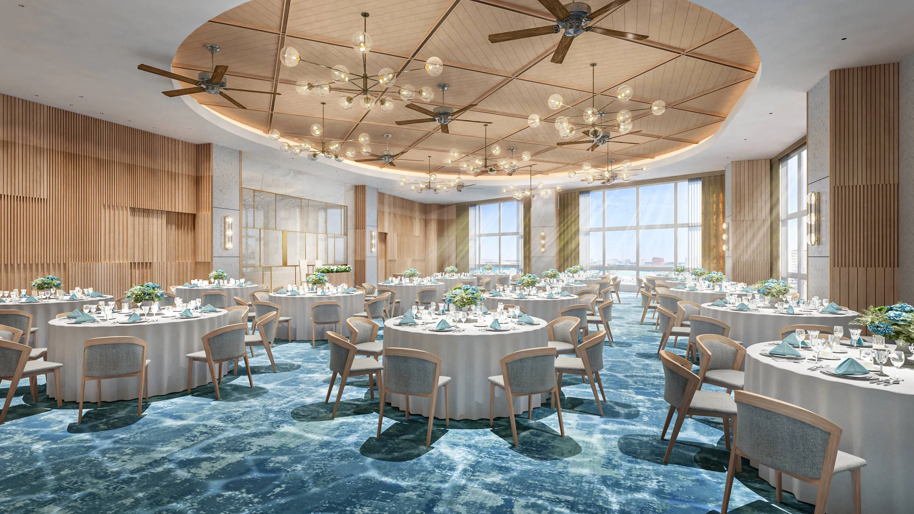
One of Okinawa's top five-star resorts, sitting on its own private peninsula. The Busena Terrace is one of the few venues in Okinawa that offers a dedicated garden ceremony: a proper grass-lawn ceremony surrounded by tropical landscaping with unobstructed bay views. Not a beach setup. Not a chapel. A real garden.
The ceremony fee is approximately ¥326,700 (AUD $2,970) and includes pastor, musicians, choir, bridal attendant, flowers, and wedding certificate. For the reception, you have access to the resort's French restaurant Fanuan (ocean-view, up to 50 guests) or larger banquet rooms up to 228 square metres. Food is rated 4.45 out of 5 on Japanese wedding review sites. French-continental cuisine with Okinawan ingredients, including premium steak courses.
The resort's semi-custom model means you order only what you need rather than being locked into a package. The banquet rooms are large enough for a proper dance floor. The remote peninsula location means your guests can stay on-site, and the surrounding area is peaceful.
One restriction: only hotel-contracted photographers are permitted. We would need to work within their vendor list or negotiate a bring-in arrangement.
Estimated cost (40 guests): AUD $16,000 to $25,000 for ceremony and reception. The most budget-friendly of the four options, leaving significant room for premium upgrades, a DJ, and guest transport.
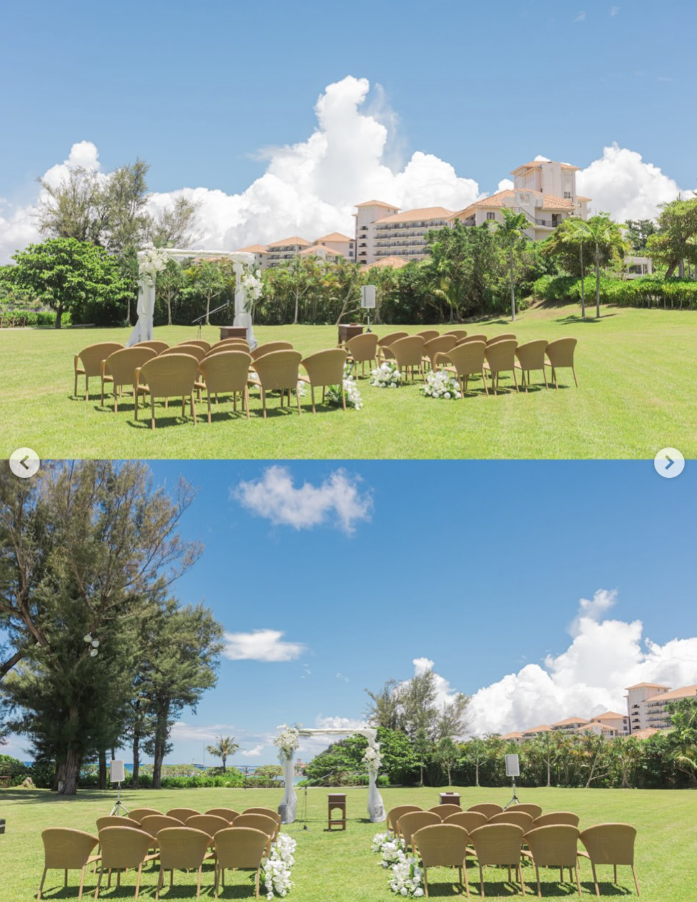
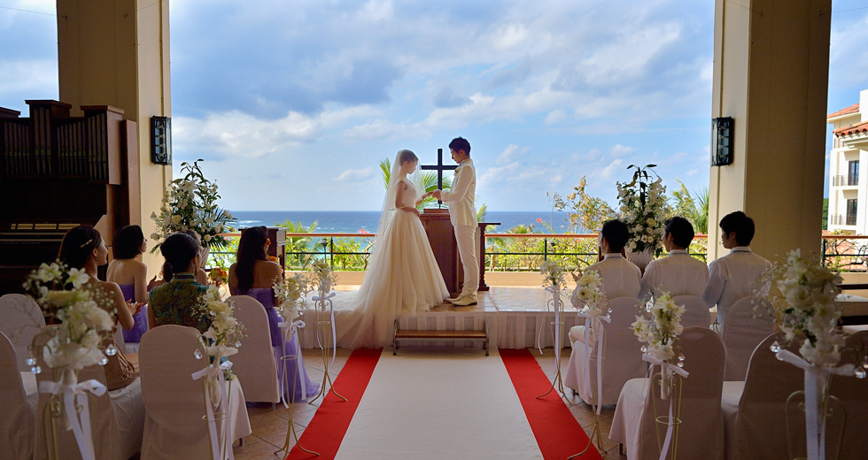
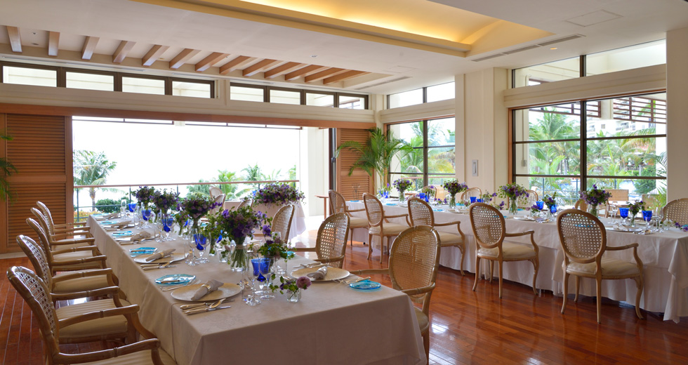
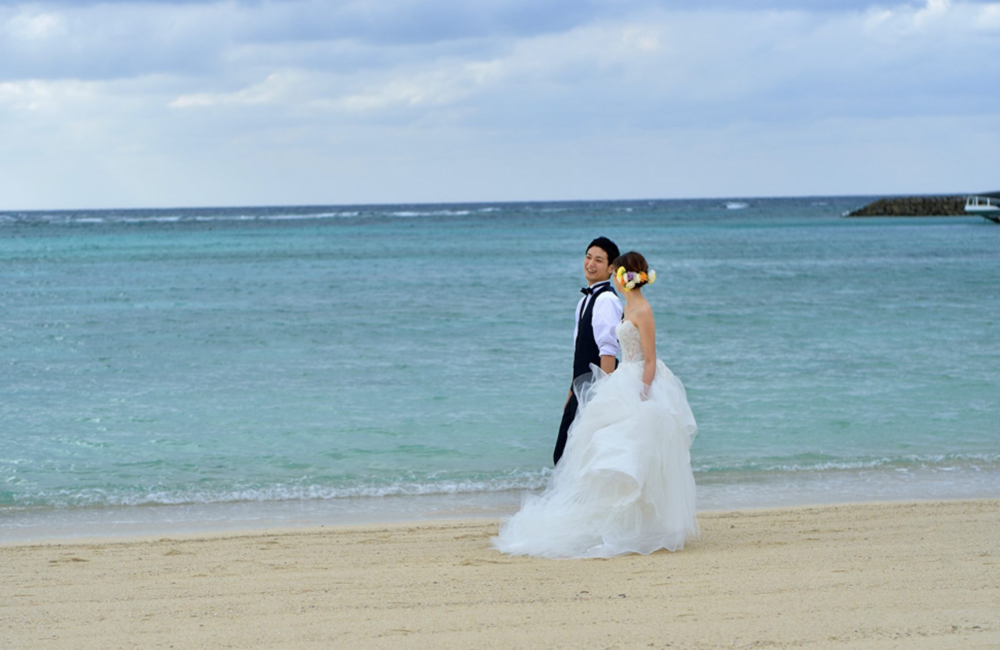
No alarms. You wake up married. A late brunch with whoever surfaces, recapping the night before. This is often the meal people remember most, when the formality is gone and everyone is still buzzing from the night before.
The rest of the day is open. Some guests will want beach time. Some will want to explore. Your younger siblings and friends who want to make a holiday of it can head to the mainland from here, hitting Tokyo, Kyoto, and Osaka on their own itinerary. We can put together a simple travel guide for them.
You and Hayden start your honeymoon. You mentioned wanting a mix of beach and exploring. Okinawa's outer islands are perfect for a few days of quiet, and then you can hop back to the mainland for cities you have not seen yet.
September is still peak typhoon season in Okinawa, with two to three typhoons typically approaching each month. By October that drops significantly, and the last two weeks of October are historically the most settled. Temperatures sit at a comfortable 25 to 28 degrees, humidity drops, and Naha actually records some of its sunniest days of the year between typhoon events.
We recommend targeting October 18 to 31, 2027. Close to your November anniversary. Warm enough for outdoor everything. Cool enough that your guests are not melting in formal clothes. And every venue we have shortlisted has an indoor rain backup if needed.
A weekday wedding in October can save up to 30% on venue costs compared to a weekend booking, and availability is much easier to lock in.
Juri is a native Japanese speaker and handles all vendor communication in Japanese. Every email, every phone call, every contract negotiation. No lost-in-translation moments. No relying on Google Translate. This is one of the biggest reasons couples work with us.
The planning fee covers everything listed above: venue research, vendor sourcing, Japanese-language coordination, budget management, guest logistics, and on-the-ground presence in Okinawa for the full wedding weekend. This fee is separate from venue and vendor costs.
Ranges reflect the four shortlisted venues. All figures in AUD.
| Category | |
|---|---|
| Venue hire and ceremony | $5,000 – $8,000 |
| Catering (seated dinner, 40 guests) | $7,000 – $12,000 |
| Drinks package | $2,000 – $3,500 |
| Bridal attire (rental) | $2,500 – $4,000 |
| Photography and album | $3,500 – $5,500 |
| Hair and makeup | $600 – $1,200 |
| Flowers and decor | $1,500 – $3,000 |
| Music / DJ / sound equipment | $800 – $2,000 |
| Wedding cake | $300 – $500 |
| Welcome dinner (40 guests) | $2,000 – $3,500 |
| Guest transport and logistics | $600 – $1,500 |
| Miscellaneous (MC, certificates, etc.) | $700 – $1,000 |
| Estimated total (excl. planning fee) | $27,000 – $46,000 |
A note on your budget. Your stated range of AUD $30,000 to $40,000 is realistic for a 30 to 40 guest wedding at The Busena Terrace, Moon Beach, or South Gate Hotel, where venue and vendor costs sit in the lower half of these ranges. At Kiranah Resort, 40 guests with premium food pushes toward the upper boundary. South Gate Hotel offers the strongest value, but all four venues can work within your range at 30 to 40 guests.
At 50 guests, per-head catering and drinks costs push the total higher. We recommend building the budget at 40 guests and treating additional guests as a stretch scenario. We will present a detailed line-item budget on our next call with exact figures once you have chosen your preferred venue.
The planning fee sits on top of these venue and vendor costs. Your total outlay including our fee will range from approximately AUD $37,000 (South Gate or Busena at 30 guests) to AUD $56,000 (Kiranah at 50 guests with premium options). The mid-range for most couples at 40 guests lands around AUD $42,000 to $48,000 all in.
Exchange rates used: ¥1 = AUD $0.0091 | AUD $1 = USD $0.69
You are already planning to be in Okinawa in June. That is a significant advantage. Rather than choosing a venue from photos and descriptions alone, you can walk the grounds, taste the food, and feel the space.
If you decide to move forward with us before June, we will coordinate venue visits at each of the four shortlisted locations. We will handle the scheduling, the Japanese-language communication, and prepare specific questions to ask at each venue: outdoor ceremony capacity for 50, dance floor and sound setup, latest permitted time for music, and detailed per-head pricing.
When you are back in Tokyo, Juri and I would love to take you both out for dinner and talk through what you saw. No pressure. Just good food and conversation.
Juri & Eamon
Married in Japan